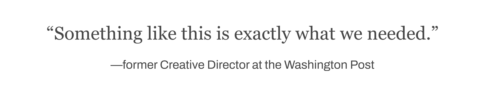
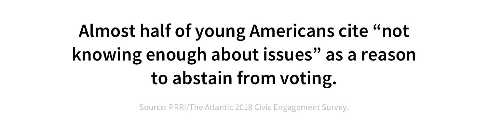
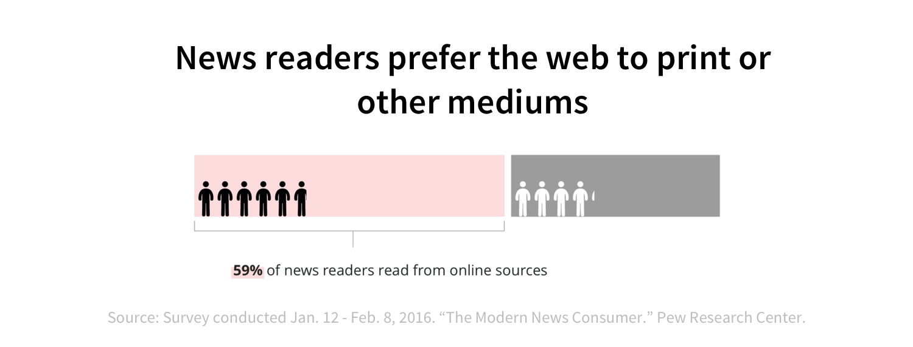
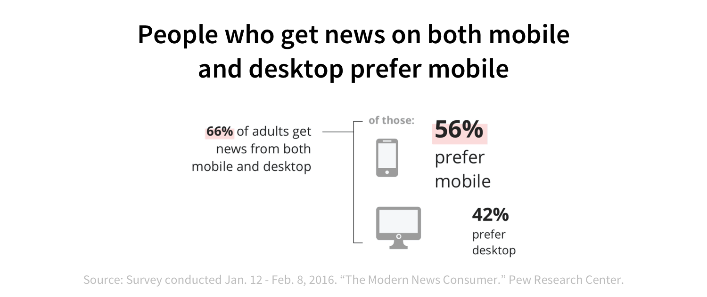
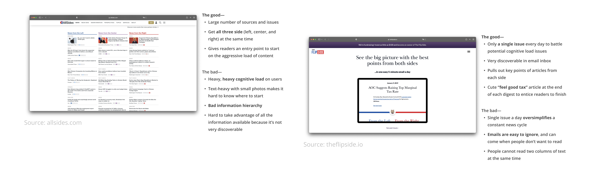
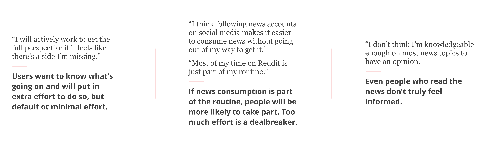
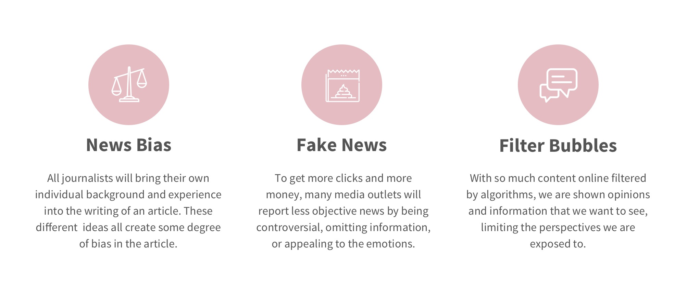
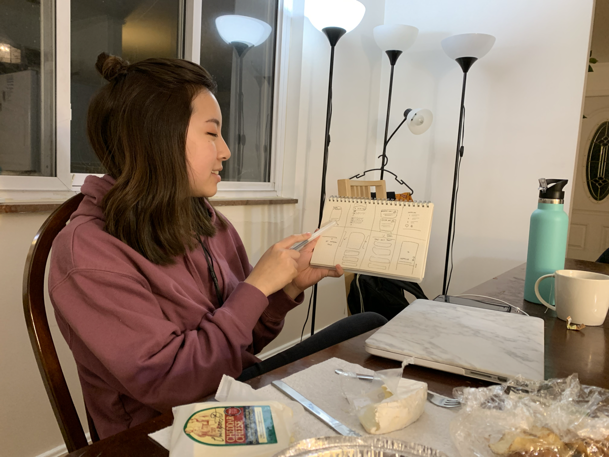
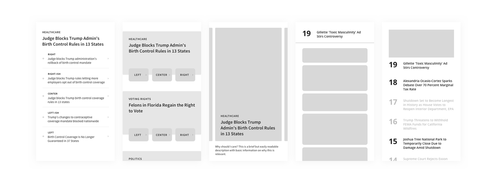

We designed a mobile application focused on providing young users with balanced news that pulls from multiple sources. Coupled with a few features focused on forming habits, lessening cognitive load, and providing information in a meaningful way, our app focuses on reducing media bias, promoting healthier news consumption, and encouraging engagement in the community.

Preliminary research

Our research had a few phases, including general research, a competitive analysis, and reaching out to people who consume news regularly and irregularly and asking them about their current methods and habits. We focused mainly on the younger generation—as the most technologically-connected, and ignorant, generation, they have a lot to gain from our concept.

General research
Much of our preliminary research involved learning more about current news bias and news-reading habits. In a study from 2016, we learned that most people still get their news from TV and then digital sources, with radio and print news at the bottom of the list. This needs to be taken with a grain of salt, however; even in the past few years, the gap between digital and non-digital sources is sure to have continued to increase.
As probably the most accessible medium, mobile will play a large part in this. From 2013 to 2016, mobile news consumption has gone up from 72% from 54%. It's easy to imagine that these numbers will only continue to grow, signaling an important need for better research and information delivery systems.

Competitive analysis
After understanding a bit more about how people are consuming news, we looked into a few other websites that had similar product goals. Among these were allsides.com and theflipside.io. Although they both provide multiple sides of the argument and strive to fully educate their readers, they had very different approaches.

Interviews
After learning more about what currently exists, we reached out to a few people to learn more about their news consumption behavior. While we learned a lot from each interview, we compiled the key points we started to design around here.

Defining the project scope
Because we had limited time and our initial research scope was so broad, we quickly found it necessary to set up constraints and goals for the project. Based on our research and interviews, as well as where we thought we could have the most impact, we came up with the following:
focus on mobile, currently the most accessible digital platform
design for young Americans, where there is a strong potential for impact
make news easily digestible, so it's not a huge hurdle
build critical thinking skills, so readers can form their own understandings

Low fidelity prototyping
Now that we had some direction, we started working in lower fidelity to flesh out ideas before going into high fidelity mockups. We started with Crazy Eights, a fast-paced design method that requires you to come up with 8 different design ideas in 8 minutes, a minute per sketch.

While these ideas were quick and dirty, and may not have made it into the final designs, it was helpful to generate fast ideas to get our brains rolling.
From these initial sketches, we began exploring several ideas, including:
Potential extrinsic motivators
Methods of integrating different sources into one article
How human-to-human interactions happen
How to engage our users
We mocked up designs around those ideas, using the screens to get feedback from others to see if our product goals were being met.

Final product
After a few rounds of iteration, we used their feedback and our own observations to guide our final designs.
Managing load
By displaying only one headline teaser at a time, we allow our readers to give each topic their undivided attention.
Supporting information
There are also interactive elements within background to provide additional material to information that may not be obvious.